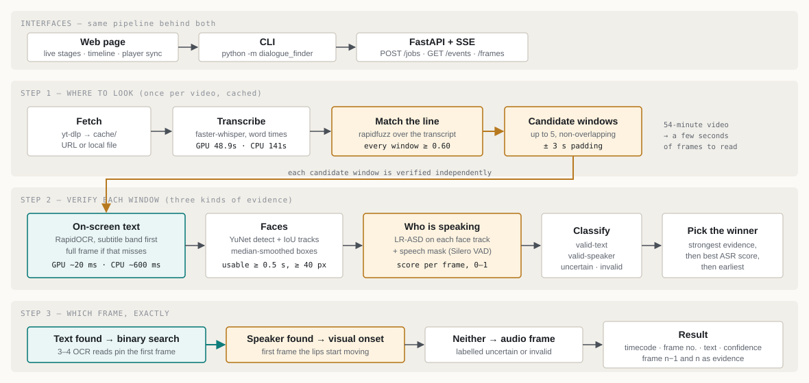
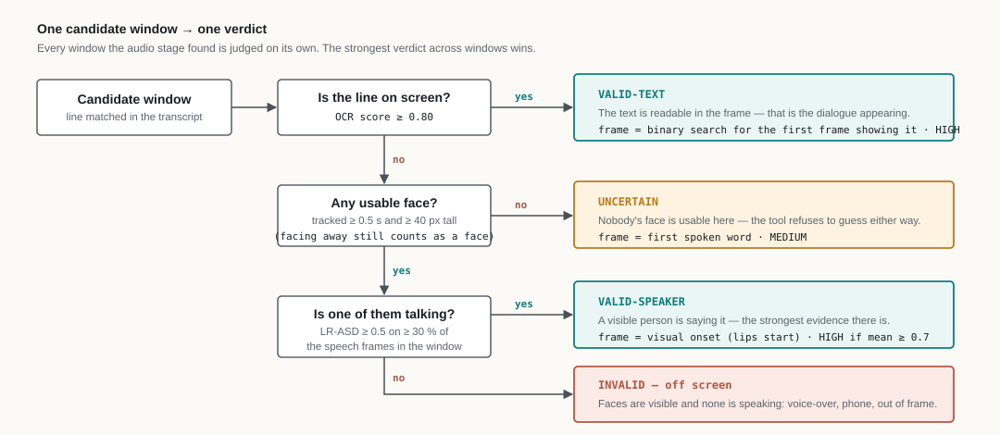
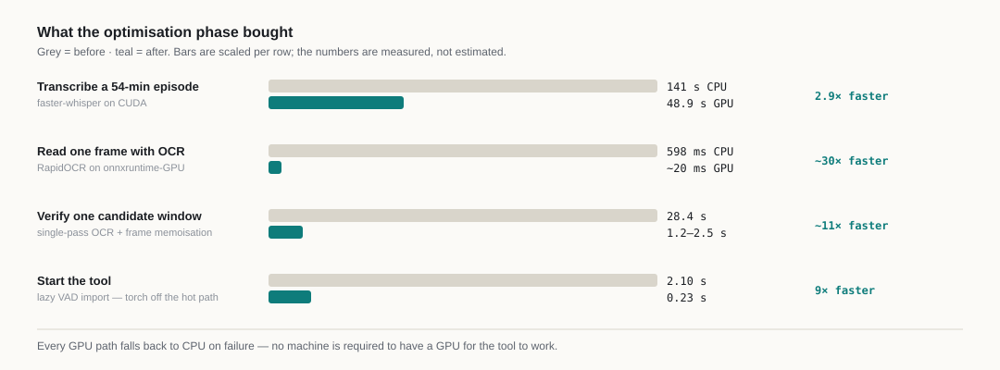
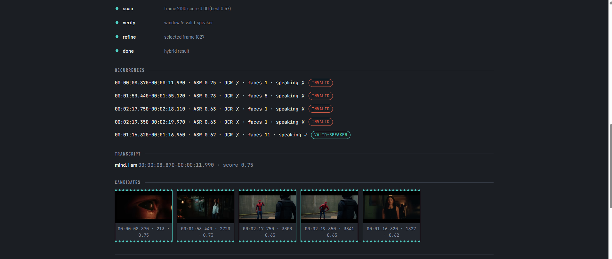
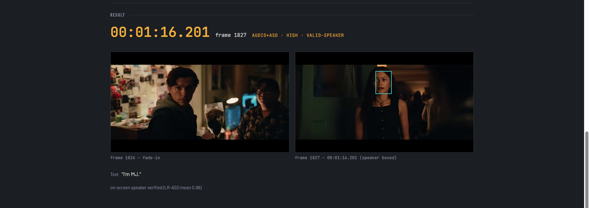

| Input | A video URL (or local file) and a target line of dialogue |
| Output | The first frame where that dialogue appears — timestamp, frame number, extracted text, frame image |
| Interfaces | Web page (live progress + synced player) and CLI, over one shared pipeline |
| Scale of the problem | 54-minute test video · 78 204 frames · one OCR read costs ~0.6 s on CPU — reading every frame is never an option |
| Supporting docs | DECISIONS.md — decision log · BENCHMARK.md — ground-truth accuracy · APPROACH.md — full engineering log · prompts.txt |
Given a video URL and a line of dialogue, return the first frame in which that dialogue appears, together with its timestamp, frame number and the text extracted from the frame. The phrase "appears" is ambiguous on purpose: a line can appear as burned-in text on screen, or it can be spoken by a person who may or may not be visible. A design that assumes only one of those readings fails on the other half of real footage — the test video supplied with the brief turned out to have no burned-in subtitles at all, while the trailers used for cross-validation carry both hard-coded captions and off-screen narration.
The system therefore has to decide, per video and per occurrence, which kind of appearance it is looking at — and say so in the answer rather than silently picking one interpretation.

| Component | Role | Technology |
|---|---|---|
| Fetch | Turn a URL into a local file, cached by URL hash | yt-dlp + static-ffmpeg |
| ASR | Transcribe once with word-level timestamps; find where the line is spoken | faster-whisper (base, task=translate) |
| Candidate windows | Every non-overlapping transcript span scoring ≥ 0.60, capped at 5, padded ±3 s | rapidfuzz (token_sort_ratio) |
| OCR | Inside a window, read the subtitle band; full frame if the band is empty | RapidOCR (ONNX Runtime) |
| Face tracking | Detect and track faces across the window; discard tracks < 0.5 s or < 40 px | OpenCV YuNet + IoU tracker |
| Active-speaker detection | Score each face track per frame: is this person speaking now? | LR-ASD (0.84 M params, MIT) + Silero VAD |
| Verification | Classify each occurrence and select the strongest | visual/verifier.py |
| Exact frame | Binary search on OCR score, or the visual speech onset | text/refiner.py, visual/verifier.py |
| Delivery | Live stage events, timeline, candidate strip, result with evidence pair | FastAPI + SSE, vanilla JS |
Four modes expose the pipeline at different depths — the mode is a user choice, not an internal branch:
| Mode | ASR | OCR | Speaker | Use it when |
|---|---|---|---|---|
hybrid (default) |
✅ | ✅ | ✅ | You need to know whether a visible person actually says the line |
audio+ocr |
✅ | ✅ | — | Burned-in subtitles, dubbed film, no interest in who is on screen |
ocr |
— | ✅ | — | Title cards, signage, text with no speech at all |
audio |
✅ | — | — | Fastest lookup; the spoken moment is enough |
Three independent evidence sources, deliberately kept separate so that each one can be trusted, tested and explained on its own.
| Evidence | Question it answers | What it cannot do |
|---|---|---|
| ASR (Whisper) | When is the line spoken? | Cannot tell whether anything is visible on screen; word timestamps drift by ~0.1-0.2 s |
| OCR (RapidOCR) | Is the line written in the frame, and what exactly does it say? | Cannot find a line that is spoken but never written |
| Active-speaker detection (LR-ASD) | Is a visible person saying it right now? | Cannot read text; needs a usable, roughly frontal face |
source: ocr / audio+asd / audio).uncertain, never invalid; a failure produces a one-line message, never a traceback. A wrong answer is acceptable; a confident wrong answer is not.Each candidate window is verified independently and receives one verdict:

| Evidence in the window | Class | Frame chosen | Confidence |
|---|---|---|---|
| OCR score ≥ 0.80 | valid-text |
Binary-search first frame showing the text | HIGH ≥ 0.9, else MEDIUM |
| No OCR; a usable track scores ≥ 0.50 on ≥ 30 % of the window's speech frames | valid-speaker |
Visual speech onset | HIGH if mean ≥ 0.7, else MEDIUM |
| No OCR; usable faces exist, none qualifies | invalid (off-screen) |
First spoken word | LOW |
| No OCR; no usable face (none found, too small/short, or ASD unavailable) | uncertain |
First spoken word | MEDIUM |
Across windows the selection is: class strength first (valid > uncertain > invalid), then ASR similarity, then earliest in time. --occurrence first|last|all operates within the winning class.
Why
uncertainexists. A person can be on screen with their back to the camera, in shadow, or at the edge of frame. Treating "no usable face" as "not speaking" would confidently mislabel those scenes.invalidis only claimed when the system has actually seen qualifying faces and confirmed none of them is talking — a distinction that costs one branch and buys honesty.
Finding the right second is not the same as finding the right frame. Two different mechanisms, each matched to its evidence:
The coarse scan samples the window at 5 fps, so a hit means "somewhere in the last 200 ms the text appeared". Between the last non-matching sample and the first matching one, the refiner binary-searches on the OCR score: 3-4 OCR reads instead of a linear walk of ~5 frames, and the same code answers correctly whether the sampling step is 5 or 50 frames.
A guard covers the case where the text was already on screen at the start of the scan region: the refiner walks backwards up to 8 samples, and if the text still hasn't disappeared it returns the earliest confirmed frame with exact = False, a note, and a downgraded confidence — rather than reporting a boundary it never actually observed.
For valid-speaker, the frame is the moment the person starts speaking on camera: the first frame where the chosen track's ASD score crosses 0.50 for 3 consecutive frames while the audio VAD says speech is present, searched from 1 s before the window start. If a cut drops the camera onto the speaker mid-line and no such run exists, the result falls back to the first-spoken-word frame with the note speaker visible; onset not observed (cut).
On the test episode the two answers differ exactly as expected: audio alone puts the line at frame 7794, the visual onset at frame 7801 — 7 frames (≈0.29 s) later, because lips begin moving after the transcriber's word boundary.
Text that fades in has no single "first" frame. The system reports the first frame that crosses the OCR threshold and labels the transition fade-in vs pop-in (measured by edge-density change between frame n−1 and n); the synthetic benchmark shows this costs 1 frame of accuracy on a 12-frame fade and 0 frames on hard cuts. Every result ships with the previous frame alongside the chosen one, so the boundary is visible in two seconds rather than taken on trust.
| Decision | Reasoning |
|---|---|
| ASR narrows the search; it never picks the frame | A blind OCR scan of the 54-minute episode is ~6 500 reads ≈ 65 min on CPU. Whisper transcribes it once (48.9 s on GPU, 141 s on CPU, cached afterwards) and reduces the work to a handful of windows. |
| OCR and ASD run only inside candidate windows | Both are per-frame costs; running them globally is what makes naive implementations unusable on feature-length video. A widened ±15 s retry covers subtitles that sit outside the spoken window (found in validation — see §7). |
| YuNet for face detection | Ships inside OpenCV, ~230 KB ONNX, no extra dependency, no torch, milliseconds per frame at 480p. The pipeline already depends on OpenCV for decoding, so face detection adds nothing to the install. |
| LR-ASD for active-speaker detection | Best accuracy-per-parameter of the published options (0.84 M params, 94.5 % mAP on AVA, MIT-licensed). Verified on our own footage before adoption, not taken on the paper's word — see §8. |
| Optional extras, never a hard requirement | ASD needs torch (~200 MB). It lives in requirements-asd.txt; if it is absent the mode emits verify: skipped and returns the audio+ocr answer instead of failing. GPU support is a second optional file with the same contract. |
uncertain is a first-class outcome |
See §3 — the difference between "nobody visible was speaking" and "I could not see well enough to tell" is exactly what an evaluator would probe. |
| Every threshold in one config module | asd_threshold, asd_min_active, ocr_match_threshold, window padding, retry padding, sampling rates — all in config.py, so behaviour can be re-tuned and defended without hunting through the code. |
| Never a traceback | Bad URL, missing file, corrupt video, missing models, cancelled job: all produce a one-line message and exit code 1. The pipeline raises only PipelineError; anything unexpected is wrapped at the boundary. |
| What | Result |
|---|---|
| Automated tests | 151 passing (144 fast, 7 slow with real models) |
| Synthetic ground truth (8 variants: fonts, position, fade, 360p/720p, 24/30/60 fps) | Exact frame on 7 of 8; worst case 1 frame (12-frame fade-in) — BENCHMARK.md |
Test episode, hybrid |
valid-speaker · frame 7801 · speaker confirmed, LR-ASD mean 0.89 |
Same episode, audio+ocr |
audio · frame 7794 · MEDIUM — byte-identical to the pre-rename behaviour |
Trailer with burned-in caption, hybrid |
valid-text · frame 297 · HIGH (audio window was 15 s away; the widened retry found it) |
Trailer title card, ocr |
valid-text · frame 466 · text read as "MARVEL STUDIOS" |
| Voice-over clip (narrator off screen) | uncertain — correctly declines to claim a visible speaker |
| ASD extras uninstalled | verify: skipped, answer identical to audio+ocr |
| Failure paths (bad URL, missing file, corrupt video) | One-line error, exit 1, no traceback |
Model behaviour measured on our own footage, not quoted from the paper: on the test episode's dialogue window, LR-ASD scored 0.95 on the speaking span vs 0.14 on the quiet span (0 false positives at the 0.50 threshold across 81 quiet frames).

| Stage | CPU | GPU | Notes |
|---|---|---|---|
| Transcribe 54-min episode | 141 s | 48.9 s | faster-whisper on CUDA (float16), cached after first run |
| One OCR read | 598 ms | ~20 ms | RapidOCR via CUDAExecutionProvider |
| Verify one candidate window | 28.4 s | 1.2-2.5 s | Single-pass OCR + frame memoisation |
| Import the package | 2.10 s | — | 0.23 s after moving the VAD import off the hot path |
Every GPU path falls back to CPU automatically when the CUDA libraries are missing — verified by running with them absent.
| Limitation | Why it exists | How the system handles it |
|---|---|---|
| Onset precision ≈ ±0.25 s | LR-ASD was trained at 25 fps; the source is 23.976 fps. MFCC hop is locked to exactly 4 audio frames per video frame, which removes drift within a window but not the model's own temporal resolution. | Documented as ±0.25 s rather than claiming frame-exactness; the evidence pair lets a human confirm. |
| Gradual fade-in costs ~1 frame | "First frame" is genuinely undefined during a fade. | Reports the first frame over threshold, labels it fade-in, and shows frame n−1. Measured in the benchmark. |
| Subtitles far from the spoken line | A weak or mistranslated ASR window can sit 15 s from the caption — found in validation on a Korean-audio clip where hybrid initially returned a worse answer than audio+ocr. |
Fixed: the per-window OCR now uses the same widened ±15 s retry as audio+ocr; re-validated to valid-text / frame 297. |
| Profile faces and hard cuts | YuNet and LR-ASD both skew frontal; a track that starts mid-line has no observable onset. | Degrades to uncertain / the audio frame with an explicit note — never a silent wrong claim. |
| English-only OCR and matching | RapidOCR is configured for Latin script; the fuzzy matcher normalises ASCII. | Non-Latin captions are out of scope and stated as such; Whisper's translate task still lets a foreign-language spoken line be found. |
| CPU cost without a GPU | OCR at ~0.6 s/frame dominates. | Window-scoped work keeps a full run in the tens of seconds; GPU support is one optional install away. |
| Demo-scope service | Single user, in-memory jobs, one job at a time (OCR/Whisper are not re-entrant-safe). | Stated in the README; a queue and persistence are the obvious next step, not a hidden flaw. |
| Option | Decision | Reason |
|---|---|---|
| LR-ASD (IJCV 2025) | Chosen | 0.84 M params, 94.5 % mAP on AVA, MIT licence, CPU-viable; verified on our footage (0.95 vs 0.14) before adoption |
| Light-ASD (CVPR 2023) | Rejected | Same authors, superseded by LR-ASD (1.0 M params, 94.06 % mAP) |
| TalkNet-ASD | Rejected | Turnkey demo, but heavier, lower mAP (92.3 %), and no licence file in the repository |
| LoCoNet (CVPR 2024) | Rejected | 34 M params (~40× LR-ASD) and GPU-oriented for ~0.7 pt of mAP |
| SyncNet | Rejected | Lip-sync offset is a proxy for speaking, not a trained ASD head; useful fallback, weaker signal |
| Lip-motion heuristic (landmarks + mouth-aspect-ratio correlated with VAD) | Kept as fallback design | No torch and fully explainable, but not a model, and weak on profile faces and small mouths |
| Cloud video APIs (Google Video Intelligence, AWS Rekognition, Azure Video Indexer, Twelve Labs) | Rejected | None fuses audio with faces to answer "who is speaking"; all need bucket upload; ~$5-11 per 54-min video |
| RapidOCR vs EasyOCR / PaddleOCR / Tesseract | Chosen (RapidOCR) | Measured: 0.5 s load and an exact read vs EasyOCR's 54 s load and split words; no torch; PaddleOCR has no Python 3.14 wheels |
| faster-whisper vs OpenAI/Groq/Deepgram APIs | Chosen (local) | Runs offline with no API key for the reviewer; every provider documents translated-output word timestamps as unreliable, which is exactly what the OCR/ASD stages compensate for |
| Ready-made hard-sub extractors (videocr, VideoSubFinder) | Rejected | They sample at fixed intervals, so they cannot guarantee the first frame — the actual requirement |


Web page (start.ps1 / start.sh → http://127.0.0.1:8000): two inputs and a button. While the job runs, stages report live over Server-Sent Events, a timeline bar shows the whole video with the located window and every OCR sample, and each candidate window appears as a row with its ASR score, OCR result, face count, speaking verdict and class badge. The result card shows the chosen frame, the frame before it, the extracted text, the confidence and — when a speaker was confirmed — the face box drawn on the frame.
Embedded player sync: the source video is cued to the found timestamp (YouTube iframe, or an HTML5 player for direct files), and clicking any candidate or occurrence seeks the player to that moment, so the answer can be checked against the original video without leaving the page. Timestamp changes use postMessage rather than reloading the iframe — the naive version re-created the player on every seek and tripped YouTube's rate limiting.
CLI (same pipeline, no server):
python -m dialogue_finder --url "<video url>" --text "My mind rebels at stagnation"
Timestamp : 00:05:25.365
Frame : 7801
Text : "My mind rebels its stagnation."
Confidence: HIGH (source: audio+asd; on-screen speaker verified (LR-ASD mean 0.89))
Occurrence: valid-speaker
Speaker : 218,0,304,395
Flags: --local <file> · --mode hybrid|audio+ocr|audio|ocr · --occurrence first|last|all · --verbose · --json · --out <dir>.
Deployment: local-first by design — one pip install, one script, no keys, no cloud, no data leaving the machine. Containerisation was deliberately not built: the models and video cache dominate the image size, and the interviewer's path is a clone plus a script, not a registry pull.
| Document | Contents |
|---|---|
| DECISIONS.md | Every decision in first person — what was proposed, what changed, and why |
| BENCHMARK.md | The synthetic ground-truth table: per-variant frame error and timings |
| APPROACH.md | Full engineering log: phase-by-phase build, command outputs, bug investigations, event contracts |
| prompts.txt | Every prompt used to build the project, verbatim and in order |